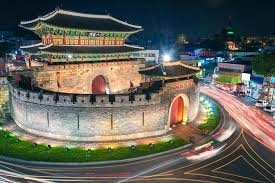
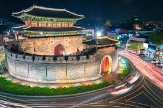

Suwon
Suwon Hwaseong is the most famous walking trail in the Suwon area, and in the evening, people go to see the night view here and the colorful lights on the streets.
Suwon Hwaseong is the most famous walking trail in the Suwon area, and in the evening, people go to see the night view here and the colorful lights on the streets.
